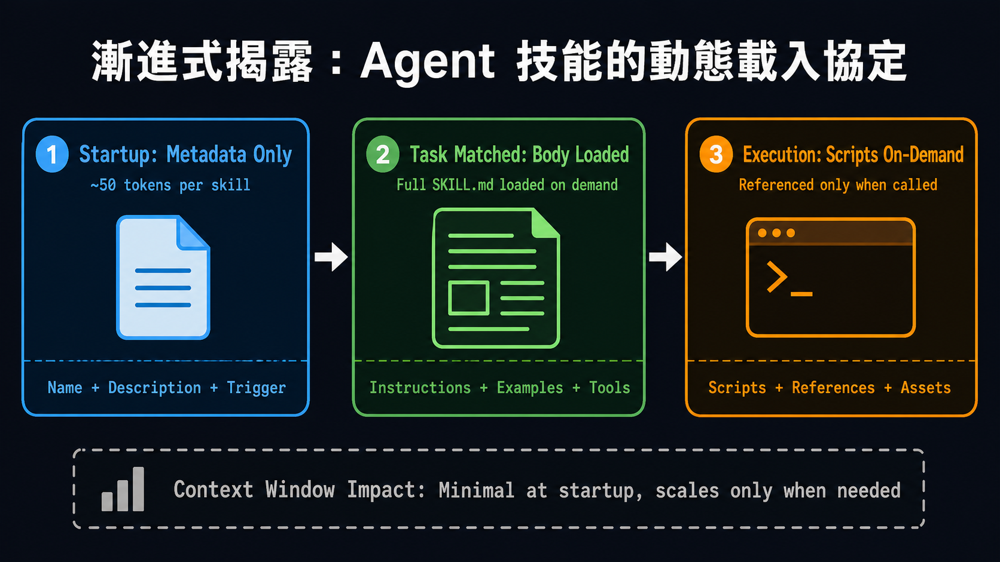
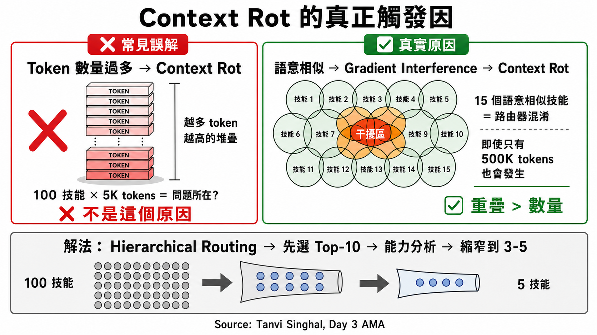
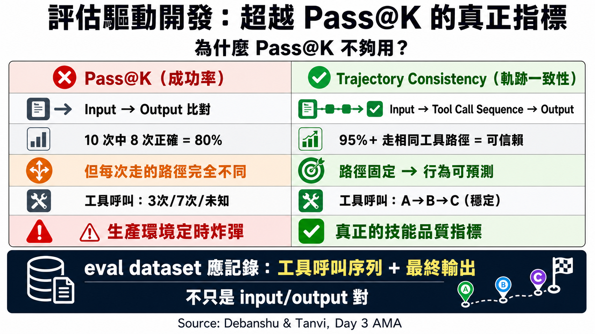
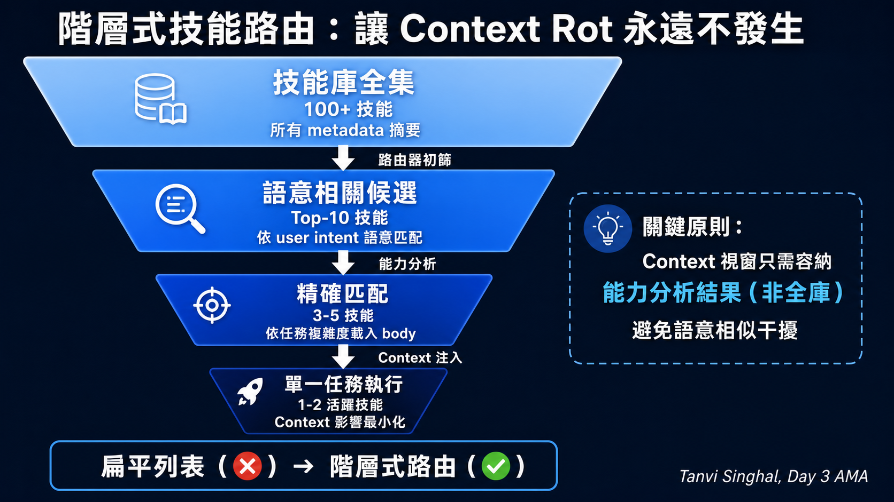
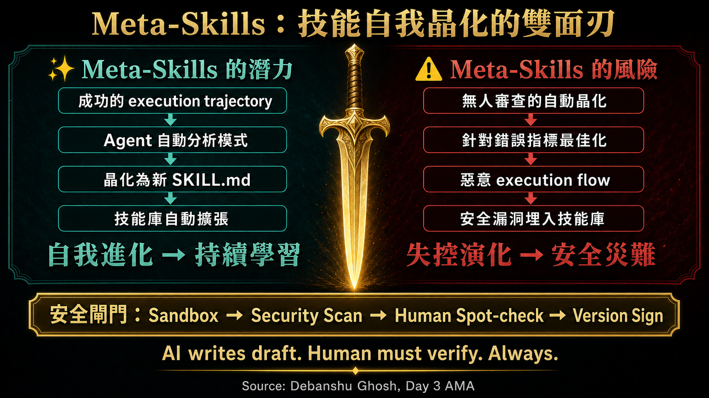

導讀簡介：Skills 作為 Agent 演進的關鍵里程碑
在 Kaggle 和 Google 五天 AI Agent 密集課程的第三天，直播焦點圍繞在 Agent Skills（技能）。主辦人 Anant 與主持人 Smitha 指出，若要讓通用型 AI 代理在實務中具備專家般的執行力，絕不能靠無限制地擴增 System Prompt。這不僅會造成 Context Rot（脈絡腐爛），還會使 API Token 預算如流水般消耗，甚至大幅增加執行錯誤率。
這場 AMA 邀請到了 Google 內部推動 Agent Skills 與 ADK（Agent Development Kit）的專家群，從技術細節到架構設計，共同探討如何將 domain experts 的 runbook/SOP，結晶化為 Agent 的「程序記憶」（procedural memory）。
第一章：Skill Anatomy — 漸進式載入的 USBC 協定
與會專家 Gabriella 與 Julia 強調，Skill 是一個精心設計的資料夾 primitive。它的核心是 SKILL.md 文件，並依據 Progressive Disclosure（漸進式揭露） 原則進行運作：
Agent 在初始狀態下，只會載入所有 Skill 的 metadata（名稱、描述與 trigger 觸發條件）。直到任務需求明確匹配、觸發閘門（Trigger Gate）開啟時，才會完整載入 body 內容。至於 references、assets 與 scripts 輔助腳本，則只有在執行期間被具體呼叫時才會按需載入。這完美解決了對話載入過多上下文的瓶頸。
這代表 Skill 的管理就像是「提示工程的動態載入系統」。它使得開發者可以把龐大的企業知識、API 說明與任務腳本封裝在一個個靈活的小模組中，隨插即用。
這裡有個反直覺的真相：Tanvi 在 AMA 中明確指出，Context Rot 的真正觸發因不是 Token 數量，而是語意相似度。100 個技能 × 5K tokens = 500K，理論上不應造成問題，但只要有 15 個技能的功能描述「看起來很像」，路由器就會誤判——這是 Gradient Interference（梯度干擾），而非容量瓶頸。
這解釋了為何「一次性全部載入」永遠無法解決問題：即使你有無限 Context 視窗，語意相似的技能仍然會互相干擾。漸進式揭露 + 階層式路由（先選 Top-10，再依能力分析縮窄到 3-5 個）才是在技能庫規模增長時，維持路由精準度的唯一可擴展架構。


第二章：評估驅動開發圈 — 精確量化工具軌跡
當開發者進入生產環境時，如何評估技能的好壞成為了最棘手的課題。Tanvi 與 Debanshu 指出，技能評估不能只看最終輸出（Output Quality），而必須追蹤 Tool Trajectory（工具執行軌跡）：
- 觸發精準度（Trigger Precision）：Agent 是否在對的時間調用正確的 Skill，不造成過度調用（Over-invocation）或漏掉關鍵 Skill。
- Token 預算限制（Token Budgeting）：如何在長對話中維持 Context Hygiene（脈絡衛生），藉由傳遞 pointer（指標）而非傳遞整個大資料集，來控制 API 成本。
- 軌跡合理性（Trajectory Auditing）：Agent 執行過程中是否有無效重複的 loop，或是嘗試呼叫無權限的 tools。
這需要建立起一套自動化的評估 pipeline。在開發階段便將 assertion 寫進 eval datasets 中，在 pre-commit 或 CI/CD 流程中自動執行檢測，確保 Agent 在升級技能時不會發生向下相容性（backward compatibility）崩壞。
Debanshu 在 AMA 中提出了一個關鍵區分：Pass@K（成功率）≠ 品質指標。一個技能可以 10 次中有 8 次輸出正確結果，但每次抵達答案的路徑完全不同——有時呼叫了 3 個工具，有時呼叫了 7 個，有時走了錯誤路徑卻幸運地輸出正確答案。這在生產環境中是定時炸彈，因為你無法預測下一次會走哪條路徑。
真正的評估指標應該是 Trajectory Consistency：確保相同輸入在 95%+ 的情況下走相同的工具呼叫路徑。這才是技能「可信賴性」的真正定義，也是為什麼 Tanvi 建議把 tool call 序列記錄進 eval dataset，而不是只記錄最終輸出。


第三章：生產環境治理與 Context Overflow 的生存之道
直播中社群提問了許多關鍵痛點，特別是「如何防止 Agent 在執行複雜任務時耗盡 API 額度並陷入死循環？」。
當 Agent 無法順利完成任務，但 System Prompt 中缺乏明確的終止機制時，Agent 會嘗試不斷重試，並陷入不斷讀取歷史對話、重複產生相同無效指令的 loop。這不僅耗盡 token 預算，還會引起 Context Overflow。
Kanchana 與 Anant 建議從架構層面進行硬性防衛：
- 最大迭代上限（Max Iterations Cap）：在 ADK 中設置硬上限，限制 Agent 在單次任務中工具呼叫的次數，超標則強制「大聲失敗」（fail loudly）。
- 異常流量與異常行為偵測：透過 OTel（OpenTelemetry）與 GCP Cloud Trace 監控執行軌跡，及時向政策伺服器（Policy Server）匯報並觸發 Kill Switch。
- 分級模型調用：在路由與檢測等低複雜度關卡使用輕量模型（如 Gemini Flash），而將需要深度推理的步驟留給高級模型（如 Gemini Pro），實踐 Token 經濟學。
第四章：Meta-Skills — 技能自體結晶與安全盲區
直播的 AMA 提到了一個極具前瞻性的概念：Meta-Skills（元技能）。意即 Agent 依據自己在生產環境中成功的 execution trajectory，自己結晶化（crystalize）並撰寫出新的 SKILL.md，將其納入 Skills 庫，實現「自我進化」（Self-Improving）。
然而，專家們提醒，這是一把雙面刃。如果 Agent 可以在沒有人類審查（Human-in-the-loop）的情況下自訂技能，極有可能引入惡意的 execution flow，或者在代碼中埋下安全性漏洞。因此，即便實現 Meta-Skills，也必須在其加入生產環境之前，經過嚴格的自動化沙箱測試（Sandboxing）與安全性掃描閘門。
Gabriella 在 AMA 中點出了一個常被忽略的安全盲區：同一份 SKILL.md 在不同模型上的行為可能截然不同。某個技能在 Gemini 上完全安全，但在另一個 backbone 的模型上可能「過於熱切地遵循強勢指令」，造成意外的權限提升。
這意味著 Meta-Skills 的安全閘門不能只針對技能本身進行靜態掃描（程式碼漏洞、hardcoded secrets），還必須在目標模型上進行動態行為測試。你不能假設「在 A 模型上通過安全測試 = 在所有模型上都安全」。這正是為什麼 Gabriella 預測：未來能勝出的 Skill Registry，不是技能數量最多的，而是把跨模型安全評估套件作為技能交付物一等公民的平台。

結語：建立你自己的「程序記憶庫」
誠如 DevRel 主管 Paulong 與 Anant 的總結，Agent Skills 就像是早期軟體開發中的巨集（Macros），用以自動化並重複高難度動作。這項範式的建立意味著我們從「編寫代碼（vibe coding）」走向了「規則治理」。開發者現在應該著手將日常重複的工作流整理為 Skills 庫，這才是未來多代理人生態系統中最寶貴的企業知識資產。
🎤 點此展開直播完整中英雙語逐字稿
歡迎大家回到 Kaggle 和 Google 五天 AI Agent 密集課程的第三天。我是 Smitha Colon，Google Cloud 的資深開發者關係工程師。
Welcome back everyone to day three of the Kaggle and Google 5 days of AI agents intensive course. I'm Smitha Colon, senior developer relations
今天我又和 Anand Nalgaria 在這裡與大家見面。Anant，歡迎回來。
engineer here at Google Cloud and I'm here again with Anand Nalgaria. Anant, welcome back.
謝謝 Smitha。大家好，歡迎回來。我是 Anant，這門課程的創辦人，也是 Cloud 的技術傳教士與產品經理。Smitha，接下來交給妳了。
Thanks Smith. Hi everyone. Uh welcome back. I'm Anant, the founder of this course and uh an evangelist and product manager at cloud. Uh take it away smith.
很開心再次看到大家。請在聊天室中告訴我們，第二天最讓你感到驚訝的是什麼？我也很好奇有沒有人深入研究
Good to see everyone here again. Drop in the chat what actually really surprised you the most from day two. I'm also curious if anyone went down the rabbit
昨天課程後提到的「託管型 MCP 伺服器」。
hole on the managed MCP servers after yesterday's session.
在開始之前，先為今天新加入的夥伴做個快速概述。在這整整一週中，你們將會獲得白皮書、
Let's start off with a quick overview before for anyone new who's joining us today. So throughout the week, you're going to be getting white papers,
隨附的 Podcast、實作實驗室（Code Labs）、每日直播，以及像這樣的 AMA。最後還有一個選修的專題專案，讓你們可以
companion podcasts, handson code labs, daily live streams, and AMAs just like this one. And also an optional capstone project at the very end where you can
爭取 Kaggle 證書、徽章、周邊商品，並在 Kaggle 和 Google 的社群管道上獲得肯定。如果你已經註冊，這些內容實際上會
compete for Kaggle certificates, badges, swag, and recognition across Kaggle and Google's social channels. So if you've registered, the content will actually
直接寄送到你的收件匣。如果還沒，所有內容都會放在 Kaggle 學習者入口網站，並在 Discord 中公佈。
land directly in your inbox. If not, everything is going to be on the Kaggle's learner portal and also it will be announced in Discord.
另外，我要特別感謝所有促成這一切的夥伴，包括 Google 的研究人員、撰寫白皮書的工程師，以及本週加入我們的講者，
Also, huge shout out to all the people who put everything together, the Google researchers, the engineers who wrote the white papers, the speakers joining us
還有在 Discord 上不眠不休回答問題的版主們。
this week, and also the Discord moderators who have been answering questions nonstop.
話說回來，讓我們正式進入第三天的概覽。第三天的主題是什麼呢？昨天介紹了 Agent 如何向外擴展，例如
With that said, let's actually get into an overview of day three. So, day three, right? Um, yesterday was about how agents actually reach outwards, uh,
工具、其他 Agent 以及支付。然而，今天我們要探討相反的方向：當你要求 Agent 執行更多任務時，它要如何管理自己所知的事情而不至於崩潰？
tools, other Asians, payments. However, today is the opposite direction. How can an agent actually manage what it knows without falling apart as you ask it to
這個問題你可能已經遇過了。要讓 Agent 變得更強大，最顯而易見的方法就是不斷增加系統提示詞。像是更多的
do more? So, the problem is probably one you've already hit. Um, the obvious way to make an agent more capable is to keep adding to the system prompt. More
指令、範例和工具。
instructions, more examples, more tools.
這招一開始有用，但隨後就失效了。
It works for a while and then it stops.
因為 Agent 會開始選錯工具，甚至忘記先前的指令，或是開始產生幻覺。今天的白皮書將這種現象稱為「上下文衰退」（context rot）。
You know, the agent will pick the wrong tool, maybe forget earlier instructions or even start hallucinating. So, the white paper today calls this context
接著，它深入探討了如何避免這類問題。而白皮書實際提出的解決方案是
rot. And then that's actually goes it goes really in depth into how you can avoid stuff like that, right? And the answer the paper actually proposes is
一種稱為「Agent 技能」（Agent Skills）的方法。其格式本身非常簡單，只是一個包含名為 `skill.md` 的 Markdown 檔案，以及選用腳本
something called Asian skills. So the format itself is really simple. It's just a folder with a markdown file called skill.md plus optional scripts
和參考檔案。就是這樣。最巧妙的部分其實是「漸進式揭露」（progressive disclosure）。Agent 在啟動時只會看到每個技能極少量的 Metadata，
and reference files. That's it. It's the clever part is actually the progressive disclosure. The agent only sees a tiny bit of the metadata for each skill at
大約只有 50 個 Token。而完整的指令只會在任務實際匹配時才會載入。所以，即使你安裝了 50 個甚至 100 個技能，
startup. So maybe 50 tokens. And then the full instruction only loads when the task actually matches. So you can have 50 or even a 100 skills installed and
仍然能保持上下文非常精簡。這也是為什麼這個格式推廣得很快，且不受特定廠商綁定。同一個技能
you know still keep that context really lean. That's also why this format spread is really fast and it's not locked to any vendor in particular. The same skill
可以在許多不同的 IDE、Anti-Gravity、Cloud Code、ADK，以及任何其他代理人化工具上運作。
actually works across multiple different uh idees, anti-gravity, cloud code, ADK, any sort of other asentic tools.
基本上只要支援該標準的工具都行。
basically anything that supports that standard.
話說回來，Anant，你想為我們詳細解說一下這篇白皮書的內容嗎？
With that said, Anand, do you want to walk us through the white paper in more detail?
謝謝 Smitha。是的，各位，歡迎回到今天的白皮書概覽，我們今天將重點放在白皮書中所概述的 Agent 技能核心典範。
Thank you, Isita. So, yes, everyone, welcome back to today's white paper overview where we are focusing on agent skills, the the par the core paradigm uh
在過去的兩天裡，我們在兩篇白皮書中探討了許多內容，包含重新定義「軟體開發生命週期」，
outlined in the white paper. So, over the last two days, we looked at a lot in our two white papers. everything from redefining the software development life
以及探索像 MCP 和 A2A 這樣的開放協定，還有我們討論過的其他協定與介面（例如 A2UI）如何連結
cycle and also uh exploring how open protocols like MCP and A2A as well as the other uh protocols and interfaces that we discussed like A2 UI connect
模型與工具及其他遠端 Agent，還有許多其他內容。而在今天的白皮書中，我們將探討 Agent 技能。如果說 MCP 是 Agent 的「雙手」，那麼 Agent 技能就是它的「教戰手冊」。
models to tools and other remote agents and a lot more as well. Well, in today's white paper we're going to look at agent skills. So if MCP is the hands of your
那麼 Agent 技能就是它的教戰手冊。
agent, agent skills are the playbooks.
在這篇白皮書中，我們定義了一個新的架構基本單元，這是一個自給自足的技能資料夾，
In this white paper, we defined a new architectural primitive, a self-contained skill folder as with outline uh centered around a single
以單一的 `skill.md` 檔案為核心，並搭配腳本、參考資料與資產。我們也強調了漸進式揭露的優雅之處，正如 Smitha 剛才提到的。
skill.md file accompanied by scripts, references, and assets. Now, we also highlighted the high uh elegance of progressive disclosure as ma highlighted
透過初期只載入輕量的 Metadata，並嚴格依需求獲取詳細的執行指南與腳本，我們可以讓我們的
as well. By loading only lightweight metadata initially and fetching detailed execution guidelines and scripts strictly on demand, we can give our
Agent 擁有數十種能力，而不會導致上下文衰退，或超出我們的 Token 預算。這個模式允許一個
agents dozens of capabilities without causing any of the context rot or blowing our token budget beyond uh what it is said to be. This patent lets a
單一通用型 Agent 動態轉變為專業角色，提供比複雜的多 Agent 架構更具可維護性的替代方案，
single general purpose agent dynamically flex into specialized roles offering a highly maintainable alternative to complex multi- aent setups which can be
因為多 Agent 架構往往很難維護與追蹤。
hard to maintain and trace.
當我們討論到這裡，常會有人問：我們該如何證明這些技能真的有效？理論上聽起來很棒，
Now the question that uh uh often arises when we discuss this is how do we actually prove that these skills work right I mean sounds nice theoretically
但我們真的不需要多 Agent 嗎？因此，我們也討論了技能的評估，重點放在觸發失敗、輸出錯誤和工具軌跡
but do we really not need multi- aents so we also discuss the evaluation of skills focusing on trigger failures output errors and tool trajectory
分析。在某種程度上，這與我們評估多 Agent 架構的方法有些類似。我們會探討簡單的成功率與嚴格的一致性
analysis in some ways um slightly align with how we uh eval um multi- aent setups as well we'll explore we explore the differences between simple success
指標（例如 Pass@K）之間的差異。接著，我們也展示了 Google 的 agents-cli，希望大家在實作實驗室中有機會
rates and rigorous consistency uh metrics such as pass at K. And then we also showcased Google's agent CLI which hopefully some of you had a chance to
體驗過，它展示了如何初始化建構、測試並將技能部署到執行期環境。最後，在白皮書的結尾部分，
play around in the code labs illustrating how you can scaffold test and deploy skills into the runtime environments. Finally, the last part of
我們進入了元技能（Meta Skills）領域，探討 Agent 如何觀察成功的執行軌跡，並
the conclusive part of the white paper, we entered the meta skills territory looking at how agents can watch successful execution traces and
自主編寫或最佳化它們自己的技能。以上就是我們在白皮書中涵蓋的內容總結，而且我們還設計了非常棒的
autonomously write or optimize their own skills. So uh that's a summary of what we covered in the white paper and we also have some incredible incredible
實作實驗室，我的同事 Pong 將在稍後的直播中進行介紹。但現在，讓我們與來賓們進行問答環節。
labs built which my colleague Pong will be covering in the later part of the live streams but let's move on to the guest Q&A of the use with her.
太棒了。好的，我們開始問答環節吧。
Awesome. Okay, let's get into the Q&A.
我們今天邀請到了幾位很棒的來賓，有 Debanshu、Gabriella、Julia 以及 Tanvi。非常感謝大家撥冗參加。Anant，
We have some amazing guests today. Uh we have the Banshu uh Gabriella Julia as well as Tanvi. Thank you all for making the time. uh Alan over for you over to
前幾個問題就交給你了。
you for the first few questions.
謝謝。第一個問題是給 Gabriella 和 Julia。隨著公開的 Agent 技能註冊中心規模擴大，需要哪些
Thank you. So the first question is for you Gabriella and Julia. So as public registries for agent skills scale, what
安全與驗證機制，以確保匯入的技能在不同的模型家族中進行編碼時，能保持可攜性與安全性？我們已經看到了許多
security and verification mechanisms are required to ensure imported skills are portable and safe across different model families for coding? We've seen a lot
關於安全風險的討論，特別是最近新聞中常提到的安全注入風險。對此你們有何看法？
about security risks uh when we uh security injection risks a lot over new cycle. So what's your uh opinion on this?
是的。我非常喜歡這個問題，也很感謝提問的人，因為我完全感同身受。我覺得自己快要被
Yeah. Um so I really love this question and thank you to the person who asked it because I do feel you. I feel like I'm
技能的世界淹沒了，它們無處不在。而現在發生的情況是，技能格式預設就非常具備可攜性。所以它
drowning all the skills world they are appearing everywhere. And what is happening is like a skills the format is very portable by default. So it runs
幾乎可以在任何地方執行。但隨著時間推移，這種「在任何地方執行」似乎正悄悄轉變為「在任何地方安全地執行」。
literally everywhere. But it seems like over the time this runs everywhere quietly turn into runs safely anywhere.
所以如果我們看一下外面大約一千個公開的技能，我發現大約有八分之一存在嚴重的漏洞，例如寫死的（hardcoded）
So uh think out there like around thousand public skills I found out that roughly one out of eight had critical vulnerab vulnerabilities like hardcoded
金鑰、悄悄連線回報（phoning home）、提示詞注入，以及所有與系統底層通訊的行為。但我主要想探討其中的兩個核心問題，因為
secrets uh phoning home prompt injection all of that talking to the body. So but I want to think about what are the main two problems of this because there are
這兩個問題是融合在同一個程式碼中的。第一個問題比較簡單，因為惡意腳本在任何地方都是惡意的。所以你的處理方式
two problems wearing one single code. So the first one is an easy one because a malicious script is malicious everywhere. So you handle it the way you
就像處理任何相依性一樣。你掃描它、檢查是否有金鑰、檢查是誰發布的、其來源等等。而第二個問題則稍微
handle any dependency. You scan it, you check for secrets, you check who published it, the provenence etc. The second problem um is a little bit more
複雜，因為這牽涉到規格所帶來的美妙可攜性。同一個技能在某個模型上可能完全安全，但在另一個模型上卻可能非常
complex because is where this portability this beauty of portability by spec. Same skill can be perfectly safe from one model, but it can be very
危險，因為每個模型都有不同的底層骨幹。有些模型會過於熱切地遵循強勢的指令，而其他模型則有
dangerous on another model because every model has a different backbone. Some models follow pushy instructions too eagerly. Some other models have
不同的護欄（guardrails）並會阻止它。因此，行為的傳遞方式不像文字那樣簡單，你的驗證步驟不能只針對技能本身，還必須針對使用該技能的模型層級。
different uh guard rails and stop it. So behavior doesn't travel the same way than text. and you verification step is not on the skill only but also on the
現在在實務上你能怎麼做，以及我們看到與我們合作的組織所採用的方法：
model level that um that is using that skill. Now what you can practically do today and what we have seen uh organizations that we've been working
註冊中心方法。類似於 Helm 採用的信任層級做法，每個技能都會獲得一個信任等級。例如，
with are adopting. So the first one is a registry approach. So similar to what HEMS adopt every skill get gets a trust tier. For instance, the built-in skills
Agent 隨附的內建技能是受信任的；來自專案本身目錄的官方技能也是如此；來自 Google 等發布者的受信任技能
ships with the agent is like not outdated. The official from the project song catalog are also not outdated. The trusted from publishers like Google and
同樣是可信賴的。但社群的長尾技能，才是需要被掃描、檢查，甚至可能被封鎖的部分。另一種
traffic, they are also trustable. But the community one, this long tail is what gets scanned, checked, and even can get blocked. Another pattern
許多組織正在採用的模式——我個人認為如果我們都採用這個模式，生活會輕鬆得多——這與 Nvidia 的做法類似。
organizations are adopting and I think it's a personally I I I I it will make my life way easier if we all adopt this one and it's similar to what Nvidia is
他們在五月二十六日左右推出了驗證 Agent 技能（Verify Agent Skills）功能。基本上它包含三個部分：第一是技能檢查器（Skill Inspector），用來尋找
doing which um I think around May 26 they launched verify agent skills and basically it has three pieces is the skill inspector which is looking for
程式碼漏洞、針對 Agent 的特定提示詞注入，以及加密簽章（signing）以了解此技能在發布後的變更；最後一個則是
code vulnerabilities agent specific prompt injections um cryptography singing knowing what change after um this skill was chipped and the last one
「技能卡」（Skill Card），這是一個機器可讀的檔案，能告訴你誰製作了它、它擁有什麼存取權限以及有哪些限制。所以這個概念非常簡單：
is um the skill card which is a machine readable file that tells you who made it, what access has, what are the limitations. So the idea is very simple.
去信任隨技能附帶的資訊。這不僅僅是擁有技能，還包含了這個能讓你覺得
It's like to trust the info that arrives with the skill like um it's like not only having the skill but like this uh this artifact that makes you feel like
它是安全的。這在目前雖然還沒有標準化，但我們看到了這個需求，且許多組織正以非常好的方式來解決它。因此，
like this is like secure and this is not like a standardized today but we are seeing this need and organizations approaching it a very good way. So I
我想給各位一個預測：最終能脫穎而出的技能註冊中心，不會是那些只擁有超長列表的平台，而是那些將
will leave you with one prediction. It's like the skill registries that will win are not the one with the long listings but are the ones who uh which treat um
評估套件和安全卡視為技能本身第一等可交付元件的平台。另外，我也想釐清，技能其實是
evaluation suites and safety card as a first class cheapable part of the skill itself. Um so and I also want to make clear like the skills is part of the
Agent 所接收的上下文工程（context engineering）的一部分。因此，許多這類機制都可以推廣到其他地方。這並非全新概念，而是
context engineering that the agent gets right. So many of these things can be propagated to other things. So it's not something new it's something that the
模型接收的內容。所以我們也可以沿用自 LLM 出現以來一直在採用的許多方法。我先講到這裡，我也很想聽聽
model receives. So we can adopt also many things that we've been adopting ever since LLM's um emerge. Um I will stop here and and I also curious to hear
Julia 妳有什麼看法。
what you have to say Julia.
沒錯，完全同意。謝謝 Gabriella。我覺得妳把很多細節都講得很清楚。從高層次來看，我認為有一個核心的
Yeah absolutely. Thanks Gabriella. Um I think you did a great job covering a lot of the details. At the high level, I would say probably there's one unifying
原則是與我們合作的組織交流時我一定會強調的：永遠不要讓安全完全依賴於模型或技能集本身。
principle for me that I talk to all the organizations we work with about which is don't ever let safety fully depend on the model or or on the set of skills.
你需要擁有明確且由主機端強制執行的能力和技能。讓指令維持顯式而非隱式，並設定硬性
You want to have um capabilities and skills that are explicitly and host enforced. make instructions explicit rather than implied and put hard
保證，就像 Gabriella 一開始提到的，在外部建立沙盒化、範圍限制、權限、出口控制等保護措施。
guarantees that we're used to like Gabriella said in the beginning from sandboxing, scoping, permissions, egress, control, etc. around the outside
如此一來，你也能隨時抽換不同的模型並進行測試，務必在發布
so that you can also switch out different models and test them along the way and make sure you're doing that before you publish them or before you
任何 Agent 或技能上線之前做好這些準備。關鍵在於我們必須在許多方面，
kind of publish any any agents or any skills live. So I think those that that is really the the the key thing at the end of the day to treat this in many
沿用傳統軟體工程的某些原則，並在這個領域中加以善用。絕不要將安全性完全委託
ways and um with some of the principles that we had around classic software engineering and leverage those um around around this area and don't ever delegate
給模型，並盲目假設它會照著預期運作。
it fully to the model and assume that it's going to go kind of down that path.
太棒了。非常感謝兩位。我很喜歡這兩種觀點，這也帶給我一個靈感，
That's amazing. Thanks a lot guys. Uh it's uh I I love both those perspectives and you know this gave me the idea like
比如建立一個技能應用程式商店，其中的所有技能都在不同模型上通過了驗證。這絕對是
an app store for skills where everything is verified is definitely something verified across different models. Um that's definitely where I see something
社群中不可或缺的，除了妳們提到我們必須在自己這端加入自訂控制之外。能知道
a must do in the community um uh as well in addition to the custom controls which you mentioned that we have to put on our side. It's still good to know that
某個技能是安全且經過測試，並且沒有惡意的提示詞注入，這點非常重要。太完美了。那我們接著進入下一個問題吧。
something is secured and tested and there's no malicious prompt injection in there. Perfect. Uh, amazing. Shall we move on to the second questions?
這個問題是給 Debanshu 的。基於檔案的技能模式（例如 `skill.md`）要如何被利用，來幫助未來的基礎模型動態地
So, this one is for you, Dubanchu. Uh, how can file-based skill patterns such as the skill MD be leveraged to help future foundational models dynamically
檢索並原生遵循多輪的執行手冊（runbooks）？
retrieve and follow multi-turn runbooks natively?
謝謝你的提問，Anant。這是一個非常棒的問題。這個主題可以從三個面向來看。首先，從
Thank you for that question, An. It's an excellent question. Now, there are three aspects to this. First, looking at how
技能如何動態檢索知識的角度來看，我們必須解決上下文的瓶頸。今天如果給 AI 一本厚重的手冊，它往往會忽略埋藏在中間的指令。
skills dynamically retrieve knowledge, we have to solve context. Feed an AI, a massive manual today, and it ignores instructions that are buried in the
而 `skill.md` 模式透過所謂的「漸進式揭露」解決了這個問題，它扮演了 AI 的程序記憶。與其一次載入
middle. The scale MD pattern fixes this via something called progressive disclosure, acting as the AI's procedural memory. Instead of loading
所有內容，模型會在工作記憶中保留微小的 Metadata 足跡，僅在需要的那一刻檢索它所需的特定指令。
everything up front, the model keeps tiny metadata footprints in active memory, retrieving only the specific instructions it needs at the exact moment.
第二，這是它們如何透過標籤或有向無環圖（DAG）來原生遵循多輪執行手冊。
Second, this is how they will follow multi-turn run books natively using tags or directed asyclic graphs.
與其在單一臃腫的提示詞中累積執行歷史，DAG 控制器會透過訊息匯流排在隔離的節點之間傳遞 Schema 參考，藉此處理交接。
Instead of accumulating an execution history in a single bloated prompt, the DAC controller handles handoffs by passing schema references between
模型完成第一步後，會清除舊的指令以保護注意力容量，並乾淨地換入
isolated nodes via a message bus. The model finishes step one, flushes the old instructions to protect the attention capacity and cleanly swaps in the new
第二步的能力設定檔。第三，這個架構將能幫助未來的基礎模型透過元技能（Meta Skills）進行演化。展望未來，模型將能
capability profile for step two. Third, this structure will help future foundation models evolve through meta skills. Looking ahead, models will
透過觀察成功的流程來起草新的執行手冊，進而自主編寫與最佳化它們自己的技能。
author and optimize the skills themselves by observing successful workflows to draft new runbooks.
然而，任何認為這能立刻實現完全自主的假設都是有盲點的。AI 撰寫的任何內容都必須先作為草稿。如果沒有人類進行抽檢，
However, any assumption that this will be a fully autonomous thing right away is flawed. Anything an AI writes must start as a draft. Without human spot
把關，模型可能會針對錯誤的指標進行最佳化，進而讓技能庫變得更糟。
checking, a model might optimize for the wrong metrics and make the library worse.
我也想在這裡補充一些內容。因為我們過去見過這種模式。一開始，有些模型會使用
Maybe I would like to add something here. Um because we've seen this pattern in the past. Um what happened is like um some models at the beginning was using
像 Google 搜尋這樣的外部工具作為環境的一部分，對吧？最終我們發現客戶和企業組織
like tools like Google search as external tools as a part of the environment, right? Um eventually we found out uh customers organizations
確實有在使用它，但他們不想特別把它選為工具。所以最新版本的模型是直接將其原生訓練到模型中。
really using it and they don't want to select this as a tool. So what happened in the newest versions of the models was like it was natively trained this model.
因此當使用者提問時，它會自動呼叫工具，例如在此案例中就是 Google 搜尋。
So when the user as something it was automatically like calling a tool like in this case for instance Google search.
所以我想我們可能會認為這仍然是一個研究問題：我們是否希望同樣的情況发生在技能上，讓模型能夠自動被訓練來
So I think um we might think that this is still a research question whether we want the same to happen to skills that automatically the model is trained to
去學會預設呼叫這些技能。例如：「好吧，我有一組我可以使用的技能」。我認為這是一個研究問題，而且這是非常
also learn this like call skills by default calling okay I have this set of things that I can use and I think this is a research question and this is very
新穎的概念。但這也會取決於人們如何使用、如何採用它，我們以前在處理工具時就見過這種模式。
new but it will come also how the people is using how it's adopted and and we we've seen this pattern before with tools
有道理，對。
makes sense Yeah.
太棒了。說到這裡，我想我們可以進入下一個問題了。
Awesome. With that said, I think we can move on to the next question.
好的，太棒了。好的，這個問題是給 Tanvi 的。在複雜的多代理人流程中，如何最佳化跨分散技能的狀態傳遞，
All right. Perfect. Uh, all right. This question is for you, Tanvi. Uh, in complex multi-agent crafts, how can state passing across distributed skills
而不至於將模型的上下文視窗當作共享訊息匯流排而導致其膨脹？
be optimized without bloating the model's context window as a shared messaging bus?
謝謝 Anant。我想 Debanchu 和 Gabriella 之前也稍微提到了這個問題。我想分享一個故事。
Thank you, Anant. And I think uh Debanchu and Gabriella also touched on these this question a little bit. Uh I would like to share a story probably
來自一位客戶的案例。我們當時正在部署一個技能圖，它在 Demo 演示時基本上是完美無瑕的。
from uh a customer. So we were once shipping a graph of scales that was basically flawless in the demo.
一切運作良好，但在實際生產環境中，效能卻默默地退化了。所以大家都說一定是模型的問題，但其實不是。
Everything works well but it was silently being degraded in the production. So um everyone said it must be the model but it wasn't. So um the
問題在於，每個節點都會接收大量的上下文，並將其作為提示詞傳遞給下一個節點，到了第四跳時，
problem was that the full output was taking uh every node was taking the most context and sending it it as a prompt to the next one and by the fourth hop
模型基本上是在重新閱讀所有上游的資訊，導致上下文衰退真的發生了。因此，這個問題的解決方法是我們移除了
basically the model was rereading everything in the upstream and the context rot really sets in right. So the fix for this problem was that uh we move
提示詞的狀態，將其移至檔案匯流排（file bus）中。
the state of the prompt into a file bus.
搬移整個狀態以將狀態與對話解耦，基本上現在會由圖形控制器來擁有狀態，而不是對話本身。因此，執行
So move the entire state so decouple the state and the basically the graph controller will own the state now and not the conversation. So execution
歷程就不會再在模型內部累積任何東西了。這是我們解決這個問題的其中一個方法，而第二個
history will be um uh will stop accumulating anything inside the model now. So this is this was the one way which we solved this and the second um
解決方案是傳遞自我參考，而不是傳遞實際的值。我們不再將整個 JSON 資訊負載傳送到下一個節點，而是
solution was pass self references not the values. So instead of sending the entire JSON uh payload of the information to the next node uh we were
傳遞指標來協助引用這些資訊。
passing the pointers instead to help with the reference of the information.
第三種保護模型注意力的方法，是將龐大的資料放在文字輸入和上下文之外，讓上下文保持非常小，
And the third way was to protect the model's attention was uh by having heavy data uh sitting outside of the text input and the context really stays small
這樣模型的能力就只需要專注於保留下來的上下文的推理。所以，這就是我們實際修復這個問題的三種方式，而且
and the model's capacity um only looks into the reasoning of uh the preserved context. So um this these were the three ways that we actually fix this and um
我們從中獲得的二階效益是系統變得可除錯，對吧？因為系統是存在磁碟上的，
the second kind of a second order benefit which we get out of this was that the system became debuggable right so the system was sitting on the disk um
它是可被檢查的，而不是在專案的第五跳中存在深層的對話。整個轉變實際上改變了
it was inspectable instead of like having uh somewhere there is a deep conversation in the fifth hop the whole um transition actually changed the
設定。所以最後我想補充的是，上下文視窗其實不是資料庫。我們不要把所有東西都塞進去，並讓模型
setup. So in the end like I would like to add that the context window is not really a database. So let's not add everything in there and uh let the model
將控制權（handle）交給系統，這個系統可以做比單純 LLM 上下文多得多的事情。
pass the handle to the system which can uh do a lot more than just an LLM context
從某種意義上來說，我認為技能就只是提示工程結合動態載入。因此，所有適用於提示工程
and in some ways I think um skills is just prompt engineering combined with dynamic loading. So all the best practices with which apply to prompt
的最佳實踐與動態載入，例如只載入必要的內容，並確保定義好圖形以做出正確的決策，
engineering and dynamic loading of things like only load what's necessary uh uh make sure that uh the graph is defined to set the right decisions get
這些全都應該被套用。非常感謝，而且在非確定性系統中，讓系統可除錯尤其重要，這要複雜得多。
made u all of that u should be applied uh thanks a lot and making things debugable is especially important in nondeterministic systems it's a lot
我們可以總結的重點是傳遞指標，而不是傳遞資料或上下文，僅僅傳遞指標。
ti that we can summarize is like pass pointers uh and Not like data like not context just pass pointers.
完全正確。是的。這就是這裡的重點。沒錯。
Exactly. Yes. That's the main point here. Yes.
我想，針對 Gabriella、Tanvi 以及 Julia 所說的內容，一個後續問題是，
I think the a follow-up question to a lot of what Gabriella and Tanvi and also like Julia has been have been saying is
假設你有很多技能，對吧？但當使用者嘗試解決某個問題時，
um so imagine you have a lot of skills, right? But you have a question that maybe the user is trying to solve a problem the user is trying to solve and
實際上有多個技能可以用來解決這個問題。而且沒有所謂唯一的正確答案。那麼，你要如何測試代理人應該選擇哪條路徑？
multiple skills can actually be used to solve this. Uh there's no actual right answer. So, how do you kind of test which path the agent should go down on
或者如果有複數個技能可以協助解決，哪一個才是最準確的路徑？
or what's kind of the most accurate one if there's multiple skills which can help solve something?
我覺得
I think
我有，沒錯，我對這很有想法，因為我一直在思考這個問題，各位。我覺得我們太過專注且固執於做自我技能提升了。
I have I have yeah I have a very because I've been thinking a lot about this guys. I feel like we are being thinking and fixating too much on doing selfkill
我不相信那套。它應該是技能庫的改進，因為這實際上是一個非常重要的問題。你可能會遇到兩個
improvement. I don't believe on that. It should be a skill li library improvement because this is a actually a very important problem. You can have two
技能，其描述非常模糊，做的事情大同小異且互相衝突。老實說，Tanvi 也在這裡，我們兩人都
skills that they have very ambiguous description that they are more or less doing the same and they are colliding and honestly tambi is here. We both have
經歷過那種情況，那真的很糟。所以我建議你這樣做：不要消耗所有的技能，要清楚知道你的專案擁有什麼技能，
faced that and it was like horrible. So if you I will suggest this you take it don't consume all the skills like know which skills you have for your project
在技能庫層級對專案的技能進行最佳化，而不僅是在單一技能層級上，並且要準備評估資料。
do optimization of the skills for your project at the library level not only on the skill level and have evaluation data
就像我認為在這五天中再怎麼強調各個環節評估的重要性都不為過。但我認為如果你有不同的技能，不要
like I think we cannot address enough in all these five days how important is evaluation at every part but I think if you have different skills do not
只在技能層級進行最佳化，而是在整個技能庫的層級上進行最佳化。
optimize at skill level optimize at at at the library of skills level
所以，你是在告訴我「技能不是你所需要的一切」嗎？（笑）
so so are you telling are you telling telling me that skill is not all you need. [laughter]
技能確實就是你所需要的一切，但要控制它，我的意思是……好吧，我不想在這裡說太絕對的話。Julia，交給妳了。
Skill is all you need, but control it like I mean like other like I mean well I don't want to say a strong statement here. Julia over to you.
喔，我只是想說，在現實中，你必須從整個系統的角度來思考，對吧？從整個……
Oh, I was I was just going to say I think that in reality you have to think about it in terms of the whole system, right? in terms of the whole uh the the
所有的組成部分，而不是只看其中的單一元件。因為每當你只看其中一小部分或單一元件時，
whole all of the pieces rather than just a single component within it because every time you're looking at just a sliver and and a component um it can
它總會與另一個部分發生衝突，我想這就是大家在這裡指出的問題，而我認為這才是
always collide with another with another piece which is I think the thing that that that people are kind of um uh calling out here and I think that's
最關鍵的癥結。在代理人發展的非常早期階段，當 Patrick 和我撰寫第一版代理人論文時，我們就討論過這個問題，
really what it comes down to. We talked about this in the very very very early days of agents when Patrick and I wrote the first version of this agents paper
我們探討的基本上是，每當你將某個東西傳遞出去時，你都可能會損失一些……
where we went down um the path of essentially um um every single time you pass something off, you're going to lose kind of some some kind of uh you're
你可能會遇到某種效能下降，對吧？所以你必須從整個流程的角度來審視，然後再將其拆解
going to probably get some kind of performance degradation, right? And so you want to look at this this this from an entire process and then break it up
成各個部分，接著再重新整合回整個流程中。因為這是你唯一真正能夠從
into pieces and but then bring it back up into into that entire process because that's the only way you're really going to get a truly performance system out of
你想要利用和建構的任何東西中，獲得一個真正高效能系統的方法。
whatever you're trying to leverage and build here.
我想再補充一點：沒錯，將它放入系統中，並且建立一個路由系統，以決定我們何時以及在哪裡需要
I would add just one more point is that yes put it in the system and also have a routing system of when and where we need
哪一項技能，然後將其導向該技能。因此，看來技能管理也將會是一件大事，或者實際上可能已經是了。
which skill and then route it towards that skill. So, it seems like even skill management is going to be a huge thing or probably still already is.
是的。從提示詞管理到技能管理。好的，各位。讓我們……
Yeah. Prompt management to skill management. All right, guys. Let
我在想這會僅僅是技能，還是當你在描述目標時，實際上會擴展到像任務之類的層面，
I wonder if it'll just be skills or actually go into something like tasks and and things like that when you're we're when you're describing the goal
而不是僅限於單一元件與基礎元件層級。不過，是的，我同意。
rather than just the individual component and primitive level. But yeah, agree.
太棒了。很高興這個問題討論得這麼深入。我們繼續……（笑聲）
Perfect. I'm glad this question was so deep. Let's move on to the [laughter]
好的，謝謝 Anant。這些回答的背景資訊真的非常棒。接下來我們要進入來自 Kimber Goldz 的第一個社群問題。
All right. Thanks, Anna. Really great context in all of those answers. We're going to now head on to our first community question from uh Kimber Goldz.
那麼，當漸進式揭露的中繼資料 Token 規模達到什麼程度時會觸發上下文衰退，而且階層式路由是否正成為一種可行的管理解決方案？
So at what scale does the token size of progressive disclosure metadata trigger context route and is hierarchal routing emerging as a viable solution to manage
來管理它？Tanvi，交給妳了。
it? Hmi on to you.
謝謝妳，Smitha。這正是我們剛才討論的路由問題，而且確實如此。所以這是一個主要的擔憂，這很自然，對吧。
Thank you Smitha. This is exactly what we were just talking about routing and um absolutely. So this is a major worry and it's natural right. So um it's
因為問題總是出在中繼資料上。舉例來說，假設有 100 個技能只需要 5k Token，如果我們算一下，那即使
always on the metadata. So let's say 100 skills is only 5k tokens for example and if we do the math then we we are safe if
我們有上千個技能，對吧？但上下文衰退實際上不是因為 Token 數量的問題，它更像是一個梯度，會對目錄產生干擾。因此，
we have thousand right but the context rot is not really in the tokens but it is like a gradient which um is which will be a distractor for the catalog. So
如果你有一份技能目錄，所有其他和目標技能相似的技能，都會成為干擾項。因此，路由功能
if you have a catalog of skills then uh all of the others which look alike as the first one then these are all distractors. So routing really breaks uh
比如在 100 個技能時就可能出問題，而不是幾千個。所以關鍵在於重疊才是問題所在，而非規模大小。因此，所有尋求
with let's say 100 skills and not a few thousand for example. So uh the catch here is that the overlap is the issue not the size. So everyone who is
語意檢索的人，可能會考慮錯誤路由的權衡，例如，這可能會伴隨著召回率問題而默默發生。
reaching for a semantic retrieval they might look for tradeoffs with mis routing for let's say you know it may happen silently with a recall problem
但我們在這裡試圖解決的方案是階層式路由，對吧？所以你不需要有一份包含所有內容的扁平列表，而是讓路由器挑選前幾名，
but um what we are trying to fix here is emerging through hierarchal routing right so instead of having a flat list of everything you have a router pick top
然後對你的技能進行能力分析，接著只將前 10 個或例如 15 個技能暴露給中繼資料，然後
picks and then uh give a capability profiling to your skill and then only the top 10 or for example 15 skills are exposed to the metadata right and then
上下文的大小始終受限於該分析結果，因此你不需要將整個技能庫都傳送到提示詞中。這就是如何
always the context is bounded by the profile so you don't need to send the entire library um to the prompt so that's how uh you know it can be solved
透過階層式路由來解決。最後，我認為可以這樣總結：上下文衰退並不是因為你實際載入了多少內容，
through hierarchal routing and um in the end like I think how I would um summarize this is um the roth isn't about how much you are actually loading.
轉變為當你載入時，有多少個技能看起來是相似的。
Um, it's about how many skills are actually looking alike when you load them.
是之，太完美了。這其實正是我們剛才討論的內容。所以，這是一個很棒的問題。
Yeah, that's perfect. That's actually exactly what we were discussing too. So, this is a great question.
好的，接下來是來自 Prrenit 的問題。
Um, on to the next one we have from Prrenit.
當技能、MCP 和工具呼叫都可用時，你該如何設計邊界，讓技能負責處理實務知識，而 MCP 負責處理存取範圍，且不會產生
When skills, MCP and tool calls are all available, how do you design the boundary so that skills handle the knowhow and MCP handles reach without
重疊？Gabriella 和 Julia，請解答。
overlap? Um, Gabriella and Julia.
好的，讓我先開始。這又是另一個哲學問題，特別是關於系統設計的問題。前幾天我在
Yeah, let me get started. This is a another philosophical question. So, and especially like a very system design question. Um the other day I was in the
圖書館，看到一本叫《尋找你的為什麼》之類的書，這讓我開始思考你現在所做的每一個決策，
library and was like a book of find your why or something like that and and that made me think every decision that you do
在使用代理人時，你必須思考為什麼。為什麼我要做這個決定？現在有太多的基礎元件了，而且有趣的是，你可以
today with the engines you have to think why why I'm making this decision there are so many primitives today out there and the interesting part is like you can
用一些走捷徑的做法，比如把技能放在代理人的 Markdown 檔案中，或者你也可以將技能系統參數化。從技術上來說，你可以做很多事，
do hacky ways you can put like a skills inside agents MD or you have you can put the skills system par so there are many things that you can do technically
比如代理人和 MCP。從技術層面來說，你都可以做到，但你需要問自己一個問題：我為什麼要這樣做？什麼是
speaking or like agents and MCP so the technically speaking you can do all of that but you need to ask yourself the question why I'm doing this what is a
技能？什麼是 MCP？而在這個特定語境下，你必須問自己：這究竟是知識，還是存取能力？所以
skill what is the MCP and in this context specifically of what you say you have to ask yourself the question is this knowledge or if this is access so
存取能力指的是任何接觸外部世界的事物——資料庫、獲取汽車資訊的 API、MCP，或用來取得天氣的工具等等。而知識
access is anything that touches the outside world databases API for pulling car information MCP job this tool to access the weather etc whereas knowledge
則是關於如何思考工作本身，像是要呼叫哪些工具、以什麼順序呼叫、如何處理結果、有哪些邊緣案例、
is everything about how to think about the work, which is which tools to call, in what order, what to do with the results, what are the edge cases, what
有哪些陷阱，以及完成這個流程的步驟，像是 HR 流程等。但我想要非常清楚地說明的是，我們在各個企業組織中看到的是，
are the gotchas, what is the process to get this um HR um journey etc. But what I want to make very clear is like what we've seen today across organizations is
你可以建立這些解決方案或外掛程式，將兩三個甚至四個不同的基礎元件綁定在一起，或者你可以綁定技能、連接器、MCP 和
like you can create these solutions or plugins like binding these two three or four different uh primitives or you can like bind skills and connectors MCPS and
子代理人。所以如果你想這麼做，你必須問：技能的目的是什麼？連接器是什麼？子代理人又是什麼？然後你可以說：
sub aents. So if you want to do this you have to ask what is the purpose of this for the skill what is the connector and what are the sub agents. So you can say
好吧，對技能而言，我會寫入「如何撰寫 Earnex 更新」、「如何執行盡職調查分析」等等；對於 MCP，我會放入像是取得信用資料的 API、
okay the skill I'm going to put how to write earnex update how to run a diligent analysis etc for the MCPS I'm going to put like API for credits data
以及需要從中提取資訊的資料庫，而子代理人則將作為委派者。因此，我認為理論是非常清晰的。技能的邊界
uh this database that I need to extract information and the sub agent where will be the delegators so I think the theory is very clear what the boundary for the
就像是流程和陷阱，而連接器則是負責執行。開此，我認為當你建立這些東西時，你必須問自己：我為什麼要這樣做？什麼是
skill is like the sides processes gotas and the connector is acting. So I think when you create this you have to ask your question why I'm doing this what is
技能的用途？MCP 的目的又是什麼？一旦有了這種清晰的關注點分離，你就能建立出色的外掛程式，你可以建構
the purpose of the skill? What is the purpose of the MCP and have this clear separation of concerns and you can build beautiful plugins? You can build
具有清晰關注點分離的優美解決方案，系統也會變得更加優雅、更容易維護等等。所以，Julia，妳想
beautiful solutions with clear separation of concerns and and it just gets elegant and easier to maintain and etc. So I think Julia, do you want to
補充一些內容嗎？
add something?
好的，我很樂意。我有一個相當……或許是過於簡化的框架來描述我是如何將這些東西組合在一起的，
Yeah, I'd love to. So I have a pretty um maybe overly simplified framework of of how I how I I put these things together,
但我將這些事物的每一項都視為一個層級，用來回答不同的問題。
but I think about tool I think about each of these things as a layer that you're answering a different question with.
所以工具應該要能回答：什麼是可以執行的單一動作。
So the tool should answer what is the single action that can be performed.
這意味著它是一個動詞，具備穩定的介面合約，例如傳送訊息、列出檔案等等。而 MCP 回答的是：我能觸及到什麼？這有點像是
That means it's a verb that can do a stable contract like send a message, list files, etc., etc. [snorts] MCP answers what can I reach? It's kind
——在沒有更合適詞彙的情況下——將所有動作連接到真實外部系統的配線。所以你會考慮連線邏輯、身分驗證、
of the for lack of a better term wiring that connects all the actions to a real external system. So you think about the connection logic, the authentication,
資料存取等這類元件。然後技能則是「我該如何著手做某事？」它們是專業知識，也就是
data access, um all of all of those kind of components. And then the skill is the how do I go about doing something? They are the knowhow. They are the
條件邏輯、正確的步驟順序、你的領域慣例和軟性政策。從這個意義上來說，它們本身沒有實際的能力。嗯，
conditional logic, the right sequence of steps, your domain conventions, your soft policies. They have no actual capability um in them in that sense. Um,
所以我想我常對許多人說的是，如果你能做以下這種快速測試，來看看你劃分的界線，這
so I think what I've been telling a lot of people in in this is if you can do the following kind of quick test to see if you've drawn the line, that is
通常會是個相當不錯的邊界定義。
usually a pretty good set of boundaries.
至少我們在與之合作的組織中發現，如果你能夠刪除某個技能的指令，而模型仍然可以
Um, at least we we've we found that in the in the organizations that we've been working with. If you're able to delete a a skills instructions and the model can
在技術上仍能執行該動作，即使有些笨拙（例如順序錯誤、遺漏邊角案例等），那麼這個邊界就很清晰。但
still technically perform the action even if it's clumsy, i.e. in the wrong order with missing edge cases, etc., then the boundary is pretty clean. But
如果刪除它會使你失去執行某事的能力，那你就等於把部分能力洩漏到了專業知識中，你應該把那部分往下推到
if deleting it removes the ability to do something, you've kind of um leaked some of the capability pieces into the knowhow and you should push that down to
工具或 MCP 伺服器。
the tool or the MCP server.
這太棒了。我認為很多人都有這個問題。昨天我們也收到了類似的問題，就是關於 MCP 與
This is great. I think a a lot of people have this question. Yesterday we also got something similar on when what's kind of the fine line between MCP and
A2A 之間微妙的界線在哪裡。特別是對於技能，你是否有某種經驗法則，能判斷原本作為技能的元件何時應該被提升為
A2A. Uh for skills in particular, do you have kind of a heruristic for when something that maybe started as a a skill should actually get promoted into
獨立的 MCP 工具？這在實際的使用案例中曾出現過嗎？
its own MCP tool? Has that ever you know come up in use cases?
我認為是有的。我通常會這樣區分：技能... 我認為 MCP 是連線，對吧？用極度簡化的話來說，就是
I think so. I would generally segregate that a skill I would I would a ski the MCP is the connection, right? um is in in you know oversimplified terms the
連線，而我大致上會在那裡劃分界線。這就是 Gabriella 在她的結構和比喻中所提到的聯結器。嗯，
connection and that's where I would kind of draw that boundary. It's the connectors that Gabriella referred to in in in her structure in her analogy. Um
而技能就像是知識與專業知識。我認為在許多層面上這兩者是結合使用的。我甚至會說，一個技能
and the skill is kind of that knowledge and knowhow. And I think I think of the two of them used together in many senses. I would actually say a skill
可能在當你需要為特定技能增加與外部世界的連線，或類似的情況時，就會轉變成 MCP。
probably uh becomes an MCP when you need to add like the connection to an outside world for a specific skill or something along those lines.
太棒了。沒錯。我的意思是，我看到的一件事是，如果你有 SOP 之類的，有些人會開始將其放入參考資料或這些東西中，
Great. Yeah. I mean what one thing I've seen is like if you like have SOPs or something some people start to put it into their references into these things
然後在這裡你可能必須問：這是否是正確的問題？比如，我是否希望這樣做？因為這也必須是安全的，而我們一直在討論它
and then they maybe here you have to ask is this the right question like do I want like because this also has to be secure and we've been talking about it
什麼才是正確的做法。這就是為什麼我會回頭思考自己做此決策的初衷。我看到，因為這很簡單，但在企業或組織中，
what is the right way that's why I go back to why I'm making this decision so I've seen that because it's very simple but in enterprises in organizations
簡單並不總是正確的方法。你必須問：我為什麼要這樣做？這是正確的方法嗎？我該如何觸及、如何擴展、如何做到這一切？而如果我們
simplicity is not always the right way you have to ask why I'm doing is this the right way how can I reach how can I scale how I do all of that and if we
回到嚴格的定義：我們為什麼要擴展、我們想要如何做到。我想我們會找到答案。對我來說，簡潔（像是讓所有內容都簡短且
just go back to the strict definition why we want to scale how we want to do it I think we find the answer and for me simplicity like have everything short
優雅）才是正確的答案——也就是關注點分離。
elegant is the is the right answer separation of concerns
我會建議... 是的，我會建議這其實是個難題，對吧？這並不容易。你知道，要擁有那份專業知識，並
and I would I would suggest yeah so yeah I would suggest that you know this is actually a hard problem right it's not easy you know having that knowhow and
確保你能釐清並區分「是什麼」與「如何做」。我也會建議我們的觀眾參考社群。有一個很棒的
making sure that you're concerning and differentiating the what from the I would ask you know our viewers to also look to the community. there's a great
開源函式庫，我們可以在那裡看看社群對技能的看法，了解他們是如何處理並使用它的，
open source library where you know we can like check out what like the community is thinking about skills you know how are they approaching it and use
而不是自己建構，對吧？所以我認為這也是我們可以參考和借鏡的。
that rather than build your own right so I think that's something we should lead on
太棒了。
awesome
好的，我們來看看社群提出的第三個問題。這個問題來自 Prasad：在建構真實世界的 AI 應用程式時，我們該如何
um all right let's head on over to the third question from the community uh this one's from Prasad when building a real world AI application how do we
決定是要使用單一代理人並附加多個代理人化技能，還是採用多代理人架構？而影響此決策的關鍵
decide whether to use a single agent with multiple agent authentic skills attached to it or a multi- aent architecture and what are the key
因素有哪些？
factors that influence this decision?
Julia，你想回答這個問題嗎？
Julia, would you want to take this?
這與我們剛剛討論過關於技能、工具等概念非常一致。我認為你的預設
This goes so much into the same conceptual ideas that we just talked about around skills, tools, and and things like that. I think your default
做法（而且我們在之前的課程中也討論過），你的預設應該是先從簡單開始，並在遇到瓶頸或邊界時再增加複雜度。
here um and I think we've actually talked about this in previous courses, your default here is start simple and get more complex as you hit boundaries.
因此，你應該先從一個擁有多個技能的單一代理人開始，只有在遇到特定問題或類似情況，
So you should start with a single agent with multiple skills and split only when you have some form of a specific problem or something along those lines that
開始迫使你必須進行拆分時才這麼做。因為你每增加一個邊界，就會增加一次上下文交接的成本。
starts to force you to every boundary that you add adds a handoff for context.
它會增加延遲，失敗也會變得更難追蹤。這類問題都會顯現出來。因此，我總是會說要先從簡單開始，而這
Uh it adds latency. Failures become harder to trace. All of kind of uh those things become a reality. So therefore I would always say start simple and this
在所有這些事情上都是如此。在你學習、體驗這個過程的階段，先保持簡單，然後再採用那些
holds true kind of in in in all of these things. Start simple as you're learning as you're kind of going through this process and then go into the tools that
變得更複雜的工具。我認為這裡需要考量的關鍵因素，像是上下文視窗的壓力。因此，我們又回到了上下文視窗的
become more complex. The key factors that I would think about here are things like the context window pressure. So um again we go into bloating of of the
膨脹，以及永久上下文的擴張、工具數量，還有你能在合理的範圍內使用多少個工具，
context window and and and the permanent context kind of expanding uh tool count and how many tools you can use in a in um in a reasonable kind of manner and
最後是這些工具的選擇準確性。通常模型可以使用 15 到 20 個工具，而當數量增加到 50 個左右時，準確度就會開始大幅下降，而且在
then ultimately selection accuracy for some of those tools. Usually they can use 15 to 20 tools. Well it the accuracy starts really to drop around 50 and with
如今的大多數模型中都是如此。因此，你真的必須考量所有這些面向。這些就是一些關鍵點，
mo with most model models today. So, you're really starting to look at kind of all of those pieces. And that are some of those are some of the key things
是我在開始擴展時會去注意和思考的。但在許多情況下，我們今天在產業中看到的做法依然是
that I would start to look at and think about as I as I start to expand. But in many in many cases, what we're seeing in the in the industry today is really
從簡單開始。先從基礎元件著手，然後當你遇到瓶頸和邊界時再開始拆分，因為你如果太早把太多東西放入
start simple. Start with the the the components and then start to break it up as you start to hit areas and boundaries because the more that you put into the
開發框架與結構中，你未來可能需要修改的部分就越多。此外，隨著模型智慧
harness and the more that you put into the structure, the more that you'll likely have to change. also as you as as um as the model intelligence starts to
持續提升，這也是需要考量的因素。
continue to grow.
我想在這裡補充一點，因為我對這個主題非常熱衷。在我看來，技能的優點在於它們
I would like to add something here because I'm very passionate about this topic uh in the sense like the beauty of skills in my point of view is like they
也改變了我們對架構的思考方式，而且某些架構並不一定需要多代理人。所以對於所有閱讀過
also came to change our mind how we were thinking about architectures and some architectures do not necessarily need multi- aents. So for all of you who read
白皮書的讀者，書中有一個很棒的組織實際案例，我們在裡面討論了何時該用多代理人，何時該用單一代理人搭配
the the white paper there is a beautiful organization real life example we had there where we are discussing when multi- aent when uh one agent with
多個技能。我同意 Julia 的看法，也就是必須從簡單開始，但你同時也需要思考這項任務的本質，因為多代理人在以下情況下非常有用：
multiple skills and I agree with Julia like you have to start simple but again you have to question what is this about because multi- aents are very good when
當你有需要並行處理的工作、代理人之間需要互相溝通等這類需求時。但想像一下，如果你有 100 個如何做某事的 SOP，
you have parallelized things when you have communication between agents when you have all of this but imagine that you have 100 SOPs how to do something do
你會想建立一個主代理人，然後再建立數百個子代理人嗎？想像一下，每當你新增一個子代理人，你就必須進行一次新的部署，這會變得多麼
you want to create one agent and then hundreds of agents. Imagine like every time you add a new sub agent, you have to add a new deployment like it gets so
龐大。所以，如果代理人很清楚何時該使用 SOP 1、何時該使用 SOP 2、何時該使用 SOP 3，你為什麼不把這些以技能的形式傳遞給
huge. So if this is very clear that the agent when to use SOP 1, when to use SOP 2, when to use SOP3, why don't you just pass this like um uh skills in a skill
代理人，讓單一代理人就能處理？這樣一來，你就簡化了部署、代理人本身以及可擴展性，因為新增一個
way that the agent only one agent can do this. So you are simplifying the deployment uh the agent itself and the scalability because like adding a new
SOP 只需要增加一個新的檔案，而不是部署另一個新的代理人。所以，我認為我們的出發點都是保持簡單，但同時也要思考「為什麼」，
SOP is only another empty file and not another agent that is being deployed. So I I I I think we are coming from the same the simplicity but also the why
例如是否需要考慮並行處理等，在這些情況下，使用多代理人架構確實會比單一代理人搭配技能更合理。
like do do you need to ask these questions like the paralization all these things where actually makes a lot of sense to have a agent over over
不過我還是建議各位去閱讀白皮書，尋找我剛才提到的那個範例。我想對 Gabriela 的觀點再補充最後一點，
skills but I will I will let you read the white paper and find this example that I'm mentioning here. I would I would just add one last thing to uh
我非常贊同這個問題，而且也要思考扁平化的系統是否具備可擴展性。如果沒有，那我們就必須思考
Gabriela's point that I I would totally ask this question and also ask if the flat uh systems are scalable. So if they are not then we have to think about you
扁平化的目錄是否真的具備可擴展性。所以，是的，那就必須選擇路由機制與不同的方式。[笑聲]
know if the flat cataloges are really scalable. So yeah, then choose routedness and in different ways [laughter]
此外，當你考慮可擴展性時，除了這點，也別忘了考量延遲。
and maybe on top of that it's not just about when you when you think about scalability also think about latency.
你是在建構一個需要即時回應的即時互動代理人嗎？否則延遲會讓使用者感到不耐煩。你是在建構
Are you building something that is a live agent where you need to have an immediate response? Um otherwise it kind of irritates the user. Are you building
一個容許較高延遲、不受其影響的系統？這會是另一個非常重要的區別，會影響你對
something where it can operate with a higher latency and it doesn't matter? Um and and that becomes another really really important distinction on on what
該架構的選擇。
you're you're choosing for that architecture.
好的，謝謝大家。這真的很棒。正如 Gabriella 所指出的，請務必去閱讀白皮書。我認為它在提供
Well, thank you all. That was actually great. Uh, and also as Gabriella pointed out, do check out the white paper. I think it does a great job giving you
系統設計概念方面做得很好，能幫你決定何時該堅持使用單一代理人搭配技能的框架，何時該轉向多代理人。那麼，
kind of system design ideas on when you should be, you know, sticking with a single agent with skills framework or moving to multi- aent. Um, and then with
話說回來，接下來我們要進入來自 Tinawal 的最後一個社群問題。
that said, we're going to go on to our final community question from Tinawal.
反重力（Anti-Gravity）框架如何協調長期記憶與技能版本控制，以防止當代理人在
Um, how does the anti-gra anti-gravity framework reconcile long-term memory with skill versioning to prevent reasoning hallucinations when an agent
使用更新後且執行邊界已改變的新技能來迭代過去的工作流程時，產生推理幻覺？Devansh，你想回答這個問題嗎？
actually iterates on a past workflow using a newly updated skill with altered execution boundaries? Uh, Devanch, would you want to take this?
好的，謝謝。非常感謝這個提問。嗯，實際上依賴代理人的長期對話記憶來管理執行邊界，是一種
Sure. Thank you. Appreciate appreciate the question. Um, actually relying on an agent's long-term conversational memory to manage execution boundaries is an
架構上的反模式。
architectural antiattern.
以我的經驗來看，如果你試圖在同一個提示詞視窗中協調過去的記憶與版本化技能，幾乎注定會觸發衰退
U, speaking for from experience, if you try to reconcile past memory with a version scale in the same prompt window, you're almost guaranteed to trigger rot
以及累積性的幻覺。
and compounding hallucination.
白皮書概述了反重力（Anti-Gravity）如何主動處理這個問題，避免這種協調。
The white paper outlines how anti-gravity handles this actively, avoiding that reconciliation.
他們不進行協調，而是使用 DAG 編排來解耦狀態。
Instead of doing reconciliation, they decouple state using DAG orchestration.
這些正是防止推理錯誤的具體機制。系統並非讓模型依賴累積的執行歷史來理解像是
These are the exact mechanics that prevent reasoning errors. Instead of letting the model rely on accumulated execution history to understand like a
過去的工作流程，而是從文字輸入中提取負載（payload）。狀態是透過檔案訊息匯流排，使用結構化綱要（schema）參考在節點之間傳遞。
past workflow, the system extracts the payload from the text input. State is passed between nodes via file message bus using structured schema references.
第二，當代理人需要執行更新的工作流程時，它會載入一個能力設定檔。這充當了可抽換的版本控制套件，
Second, when the agent needs to execute an updated workflow, it loads a capability profile. This acts as a swappable version control bundle that
規定了該特定節點的技能、工具和邊界。
dictates the skills, tools, and boundaries for that specific node.
最後，為防止舊的執行邊界滲透到新的邏輯中，編排層會執行硬重置。它會卸載先前的
Finally, to prevent the old execution boundaries from bleeding into this new logic, the orchestration layer performs a hard reset. It unloads the previous
系統指令並清除過期的變數，然後才將版本設定檔載入記憶體。透過利用嚴格的拆卸與重建流程，
system instructions and flushes sale variables before swapping the version profile into memory. By utilizing the strict tear downs and rebuild processes,
該框架迫使模型根據更新後的 skill.md 限制來執行，而不是試圖從
the framework forces the model to execute against the constraints of the updated scale MD rather than attempting to synthesize a hybrid from that
對話記憶中合成出一個混合體。
conversational memory.
或許我想補充說明的是，在這種情況下，當代理人出錯時，它並不是通常意義上的產生幻覺，
Maybe if I want to add a clarification here is in this case that the question uh for this question when the agent gets this wrong it is isn't hallucinated in
它沒有憑空捏造任何東西，而是忠實地執行一個已不存在的程序，對吧？所以代理人正在運行，但記憶是
the usual sense it's not inventing anything it's faithfully following a procedure that no longer exists right um so the agent is run but the memory is a
過時的，記憶才是問題所在。因此，解決這個問題的方法是將記憶與技能視為具有不同生命週期的兩件事。記憶是
stale the memory is the the problem so to fix this is to treat memory and skills as different things with different life cycles. Memor is
情節性的（發生了什麼事、何時發生等），而技能則是程序性的，並且是我們目前做法的版本控制。所以如果你想想我們現在的做法，這個技能
episodic, what happened, when happened etc. And the skill is procedural and version how we do it now. So if you think how we are doing now, this skill
已經更新了。這就像是你假設這是一個非常過時的技能，所以你知道這是該技能的新版本。這個技能就是
has been updated. You are like you know like assuming this is a very outdated skill. So you know that this is the new version of this skill. This is the skill
你今天應該使用的唯一真實來源，而不是記憶。所以技能才是版本控制的唯一真實來源，而當前記憶只是一個提示，絕不是
the source of truth that you should use today not on the memory. So the skills are the source of truth version and current memory is a hint never an
指令。工作流程的版本和狀態，應該讓每一次的邊界變更都清晰可見，而且非常重要的一點是
instruction versions to the workflow the state make every boundary change visible and one thing that is very important is
大聲失敗。所以，如果代理人發現有不一致的地方，就告訴使用者：「看，這是記憶，而這是我目前執行的地方，
fail. So if the agent thinks like there is a discrepancy tell the user look this is the memory this is where I'm doing it
這個技能的版本已經過期。」也就是說，要將版本控制納入代理人的可見性中，好讓代理人能向使用者解釋並提供
uh this skill is already out of version so make part the versioning part of the agent visibility so the agent can explain this to the user and give
關於如何繼續進行的選項，並讓使用者知情。嗯，所以我認為無論是否使用 Anti-Gravity 或是任何其他框架，這都是
options how to proceed and the user is aware um so so I think this is depend regardless of anti-gravity or any framework this thing is something that
當你同時擁有記憶、技能和工作流程時，一定會面臨的問題。
you will have when you have like memories and skills and workflows Sya.
所以我建議遵循這種方法。
So we I would recommend to follow this um this approach.
我很喜歡「大聲失敗」這個概念。順著這一點追問，Devansh 和 Gabriella，你們如何看待技能的向下相容性？
I love the concept of failing loud. Uh just to follow up on this, how Dvanchu and Gabriella, how do you think about you know kind of backward capability
比如，技能的 V2 版本是否應該總是能安全地替代版本一，還是這其實並不切實際？
compatibility of skills, right? Like should a V2 version of a skill always be safe to swap in with the version one or is that unrealistic?
嗯，如果我們從最基本的原則來思考，我希望情況確實如此，除非你是在
Um if we were to think through you know from a very groundup principle I hope you know that's what the case is you know and unless like you're sort of
提出一個未經實戰測試的技能版本，然後用一個經過實戰磨練的 V2 版本來替換它，我
coming up with like a version of scales that are not battle tested right and you're swapping that with like a v2 uh version that is battle hardened right I
認為這可能會產生一些 V1 所沒有的行為差異，也許 V1 在某些特定條件下會失敗，
think that would that would create like sort of behavioral differences which you didn't have with v1 where maybe v1 was like failing um under certain conditions
而這些情況並不顯而易見。但我還是會建議始終使用最新版本的技能，這樣你就能獲得我們之前提到的那些社群彙整資訊，
which are not very apparent. Uh but I would recommend to always use the latest version of the skills so that uh you have like that crowdsourced information
也就是我們在儲存庫中討論的那些內容。
that we were talking about you know in the repos.
我想這沒有單一的標準答案。如果前一個技能存在安全性漏洞呢？顯然你沒有辦法
I think there is not a single right answer. What if you were having that security vulnerability in the previous skill? So obviously there is no way you
不想回到舊版本，對吧？顯然你絕對不想回去，但如果新版本有這個安全漏洞呢？那麼顯然你會想要
want to go back to that right. Obviously like no way you want to go back but what if the new version has this security vulnerability. So obviously you want to
回去。這就是為什麼我認為 AI 代理人的「主動報錯」（failing loud）不只是告知使用者而已。它正試圖找出不一致之處。什麼是
go back. So that's why I think like failing loud from the agent goes more than telling the user. It's trying to find the discrepancies. What is the
差別？如果我從這裡移到這裡，這實際上代表了什麼？這就像是更明確地釐清在這些
difference? What is the what does it mean actually if I move from here here we we like it's just like getting more explicit on what is happening between
版本之間發生了什麼事，而且我認為這就像是程式碼的版本控制。這是我們可以做到的事情。
the versions and I think this is like just code versioning. This is something we can do to that.
太棒了。非常感謝各位的見解。
Perfect. Thanks a lot everyone for your insights.
沒錯，非常感謝所有來到現場解答問題的嘉賓。很感謝大家帶來的深入解答，以及
Yeah, thank you to all the guest speakers for coming on here to answer all of these questions. really appreciate the in-depth answers that we
我們所進行的愉快對話。
got and all those, you know, nice conversations that we had.
好的。
Okay.
好的。現在我們要進入 Codelab 實作階段。今天我們有兩個實作。它們實際上會帶領你從使用技能，到
All right. Now, we're going to move on into the code labs. Today, we have two of them. Um, and they're actually going to take you from using a skill to
建立使用 these 技能的 AI 代理人。第一個會帶你瞭解技能在 Anti-Gravity 中是如何運作的。第二個則會是真正的動手實作，你將會
building agents that use them. The first one will walk you through how skills work inside anti-gravity. The second one is where it gets really hands-on. you'll
使用 Agent CLI 搭配 ADK。Paulong 會帶領我們進行這兩個實作。現在把時間交給 Paulong。
use agent CLI together with ADK and Paulong is actually gonna walk us through both of them. Over to you Paulong.
大家好，我是 Paulong。我是 Google Cloud AI 的開發者關係主管（DevRel Lead），今天非常高興能帶大家一起進行這些 Codelab 實作。那麼，第一個
Hello everyone. I'm Paulong. Um I'm a devro lead for cloudi at Google and I'm super excited to talk to you through some of the code labs today. Um so the
Codelab 正如 Smitha 提到的，是關於如何使用技能、撰寫技能，以及在 Anti-Gravity 中安裝一些預建的技能。所以在這第一個
first code lab as Smith mentioned is on using skills authoring skills and installing some pre-built skills in anti-gravity. So in in this uh first
Codelab 中，你會看到你可以建立技能。正如大家所提到的，它們本質上就只是一個 skill.md 檔案，存放在
code lab you'll see um that you can create skills and skills as was mentioned by the folks um they're essentially just a skill.md file sitting
資料夾中，另外也可以選配一些腳本、參考資料和資產。這裡有一個技能的範例。你會有一個存放在資料夾中的技能，
within a folder and it could optionally have some scripts some references some assets as well and here's an example of a skill. So you would have a skill
這個技能是資料庫 Schema 驗證器。它可能會有... 不過它絕對需要包含一個 skill.md 檔案，
within a folder and this skill is the database schema validator. It may have a, you know, it's definitely needs to have a skill that MD file within it
以及頂部的 Front Matter，用來描述技能的名稱、技能的描述，以及該技能實際上應該執行的工作。所以，這個
along with some front matter at the top that describes the name of the skill, the description of the skill and what the skill should actually do. So, this
Codelab 會帶你瞭解如何在 Anti-Gravity 中建立技能、了解技能的結構，你也會學習到各種不同的
code lab will walk you through how to create your skills in anti-gravity, uh the breakdown of skills, and you also learn across a different variety of
技能，包含不同的複雜程度。你將會在 Anti-Gravity 中使用到這些技能，而它們所做的
skills uh in terms of different levels of complexity, if you will, as well. So there will be skills that you'll be using in anti-gravity. And all that it
其實就只是包含一個提示詞。這只是一套指令，告訴你如何執行這個技能來協助格式化你的 Git
will do is just have a a prompt. It's just a set of instructions of how you can uh you know run through the skill to help you with formatting your your git
commit。另外你也會有其他技能，是你需要實際在技能中加入一些決定性。就像
commits. And then you also have other skills in which you're actually going to add a little bit of determinism into your skills. You know sort of as uh
Gabriella 和其他人之前討論過的，技能的發展軌跡或評估是一個非常熱門的話題。所以有時候這些技能會
Gabriella and others had discussed the um the the trajectory or the evaluation of skills is is a really hot topic. And so there are times in which skills will
顯得有點非決定性，因為它們本質上就是提示詞。因此你可能會想，有時候你會想強制執行某些非常
be a little bit non-deterministic because they're essentially prompts. So you may want to think about sometimes you want to enforce certain very
決定性的行為，而資料庫 Schema 驗證器就是一個例子。在那個例子中，你會實際呼叫一個 Python
deterministic behaviors um within the skill and the database schema validator will be an example of that where you'll be actually calling upon a a Python
腳本，來作為該技能流程的一部分。這是一個非常有趣的部分。而你即將在
script to actually run as part of the flow of the skills. So this is a really interesting one to to look at. Um and so each of these skills uh that you'll be
這個 Codelab 中學到的技能，將帶你了解各種建立技能的不同方式，並探索
learning in this first code lab, we'll go through a different variety of different kinds of ways in which to to to build skills and and and discover how
技能內部的不同資源，如何幫助你為技能的運作加入更多能力。你也會學到
the different resources uh within the skill uh can help you add more capabilities to how the skills essentially run. You also learn a little
更多關於 Agent CLI 的資訊，就像 Smitha 剛才提到的。這能讓你僅僅透過提示詞，就在 ADK 中建立 AI 代理人，你可以用來協助
bit more about uh agent CLI as Smitha just mentioned. This will enable you to just using prompts uh create agents in ADK that you can use to help you with
流程自動化，或是提供能讓客戶或使用者直接使用的 AI 代理人。你也會學習到如何將代理人技能
process automation or to provide agents that you can uh have customers or your users uh use directly as well. You also learn about installing agent skills uh
直接安裝到 Anti-Gravity 中。這就是你今天將進行的第一個 Codelab。
directly in anti-gravity as well. And so this will make up the first code lab that you'll be going through uh today.
舉例來說，這裡是一個技能。這是一個 Markdown 檔案。頂部是 Front Matter，接著是下方的指令
Um and so as an example here uh here is a skill. Um this is a markdown file. You have your front matter at the top and then you have some of the instructions
。在這個例子中，因為你可能想要以決定性的行為來驗證特定的 Schema，而且你總是
below. And in this one here, because of the deterministic behavior that you might want to have to validate a particular schema and you always
想要以這種特定方式執行，此時你就可以將它寫在程式檔中，例如這個 Python 腳本，它會作為
definitely want to run it in this particular way, then you might have it in a code file like in this Python script that will run as part of one of
該技能中指令步驟的一部分。好的，接下來的 Codelab 實際上會更深入探討 Agent CLI 以及使用 ADK 的整個 AI 代理人
the instructions uh steps within this skill. Okay. And then so the uh the next code lab is actually a deeper dive into agent CLI and the whole agent
開發生命週期。對於之前參加過 Kaggle「五天 AI 代理人密集課程」的學員來說，你們當時已經編寫過 ADK
development life cycle with ADK. And so uh for those of you who joined us in the previous uh Calg 5 days of AI with agents uh course um you had authored ADK
代理人。而這一次的 Codelab 不需要你親自編寫程式碼。你將完全在 Anti-Gravity 中透過提示詞
agents uh with with code right this time uh this code lab doesn't have code that you'll be writing. You'll be writing everything through through prompts in
來完成所有事情，並使用 Agent CLI 提供的技能與指令。你會建立一個專案，然後在專案中
anti-gravity using the skills and commands that are made available through agent CLI. So you'll create a project um and then in this project you'll be
建立一個 AI 代理人。這是一個客戶支援代理人，它的工作是分類並判斷使用者的查詢是否與物流運送相關，因為這是為一家
creating an agent. This is a customer support agent and what it'll be doing is to classify if the user query is uh related to shipping uh because it's for
物流公司設計的。如果是與物流相關，它就會回答對應的問題。看起來大概會像這樣。我問它：
a shipping company. And then if it's related to shipping answer some questions. So it'll look something like this. Um so I've asked it you know where
「你們寄送到哪裡？目前僅寄送至美國境內。」好的。「我該如何追蹤我的訂單？」接著它會說：「我們會寄送電子郵件給您，
do you ship to? currently only ship within the United States. Uh, okay. How can I track my order? And then it will, you know, say, uh, we'll send you emails
裡面有追蹤連結。」好的，非常簡單。
to track the link. Okay, super simple.
所以，你只需要在 Anti-Gravity 中使用 Agent CLI 搭配提示詞，就能建立這個 AI 代理人。接下來，我會向各位展示這大概是如何運作的。
So, you'll be able to create this agent just using prompts in agent CLI with anti-gravity. Um, and then so I'll show you kind of like how that sort of works.
我現在來到了 Anti-Gravity IDE，並且剛執行了 Codelab 中的最後一個指令來測試我的 AI 代理人，也就是你們剛才在
So, here I am in the anti-gravity IDE and I've simply just run like one of the final commands in that code lab to test my agent, which you saw just earlier in
另一個螢幕上看到的。我所做的是啟動了客戶支援代理人的本地開發測試環境（local development playground）。你會發現在這
the other screen. And what I did was it said launch the local development playground for my customer support agent. And you'll see during the 26
26 秒的執行過程中，它讀取了 Google Agent CLI 的工作流程技能（workflow skill）——這是 Agent CLI 的一部分，藉此了解如何執行與啟動
seconds that it was running, it viewed the skill, the Google agent CLI workflow skill, which is part of agent CLI to understand how to run or launch the
本地開發測試環境。因此它知道需要執行哪些指令。它執行了這些指令，然後啟動網頁介面，
local development playground. So it knows the commands it needs to run. It runs the commands and then it launches the the web interface for me to be able
讓我可以直接在 localhost 上瀏覽，也就是大家現在看到的畫面。所以你看到了這種單靠提示詞建立 AI 代理人的端到端旅程，
to actually uh see it in local host, which is what you see here. So you see the sort of end to-end journey of building agents um just through prompts
使用 Agent CLI，其中包含了 lint 檢查、測試和命令列執行。當然，你也可以探索更多能與 ADK 搭配使用的方法。
using agent CLI including linting including uh testing and uh command line execution as well and then of course you can uh discover some more things that
你在這些 Codelab 中學到的技能，也可以直接運行在 ADK 代理人內部。所以
you could use with ADK. Um the skills that you'll be learning throughout these code labs you can also serve inside the ADK agents themselves as well. So you
你知道你擁有能在 Anti-Gravity 中使用的技能，也有可以在 AI 代理人內部使用的技能。所以你可以思考如何
know you have skills that you can use as part of anti-gravity you have skills that you can use within the agents as well. So you can think of how you could
在進行 Vibe coding 時共享這些技能。你可以建立技能，甚至建立 AI 代理人來讓其他人使用這些技能。而這些
um share skills across um when you're vi coding you could create skills and even create agents to to allow other people to use those uh skills. Um so those
技能在不同的面向和不同的層級上都是可以通用的。因此，除了這兩個 Codelab 之外，
skills could be same and common across uh different sort of facets and different layers as well. So I have I have listed a couple of bonus challenges
我還列出了幾個加分挑戰，特別是基於今天所有嘉賓們精彩的討論。第一個是，
here in addition to these two code labs um especially based off of this wonderful discussion from all these guest speakers here. Um the first one is
當你們在進行這些 Codelab 時，我希望大家能思考一下，在你們的工作、學業或日常生活中，有哪些繁瑣的手動任務
um so as you go through these code labs I want you all to be thinking about what are some some manual tedious tasks that you kind of have to do as part of your
是你們想要自動化的。也就是那些重複且繁瑣的事，
work or part of your your studies or part of your your daily life that you might want to think about automating. Um so repetitive tedious things that you
也許可以將其轉換為一項技能。我的建議做法是，先在 Anti-Gravity 中手動
might want to think about automating that maybe you could convert into a skill. So the way that I would approach it is in anti-gravity try to do things
執行這些操作，然後要求 Anti-Gravity 根據這些步驟自動為你建立並轉換為一項技能。好的，
uh manually and then ask anti-gravity to convert that into a skill to create the skill for me based off of that. So okay
這將幫助你建立一些實用的技能來便利你的日常生活。第二個今天非常熱門的話題是關於
so that will help you create some skills that will help you in your day-to-day life. And then the second thing which was a really hot topic today was on
評估。那麼，你該如何評估自己剛撰寫的技能是否有效？這將是
evaluation. So um how do you how do you think about uh evaluating the effectiveness of your skills that you've just authored? Uh so that's going to be
你特定工作流程中的一大關鍵。最後，正如 Gabriella 所說的，還有那個核心的「為什麼」問題。也就是要確保你
a big question for your particular workflows. And then finally, as Gabriel said, um the the why, the the big why question. So, um making sure that you
清楚知道你的技能確實解決了你的問題。
know your skill is solving your problem.
不僅要確保技能按預期運作，更要解決日常生活中實際遇到的問題。我認為這會是
Not just making sure that the skill works as intended, but also solving your actual problems in your day-to-day uh uh lives. I think that's going to be uh the
最重要的問題，並思考技能如何融入這個更大的架構中。這些就是我為這兩個 Codelab 所設定的一些小加分挑戰。
biggest question of all and in thinking and and seeing how skills fit into that uh sort of larger equation. So, uh those are my sort of soft bonus challenges to
希望大家在 Codelab 實作中收穫滿滿。我很期待在 Discord 伺服器中與大家交流。那就這樣，時間交回給
these uh two code labs. Hope you have a wonderful time at the code labs. I'd love to see you all in the Discord uh server. And uh that's it. So back to you
Smitha。
Smith.
非常感謝 Paulong。我強烈建議大家完整跑完這兩個 Codelab。你們會從中學到很多。此外，如果你
Thank you so much Fong. I highly recommend running both of those code labs end to end. You're going to learn a ton from that. And then also if you get
對如何賦予你的 AI 代理人使用 Google 服務的能力感到好奇，Google 也提供了一套技能，讓你的 AI 代理人能做到這一點。
curious on how you can give your agent capabilities to use Google services, Google also has its own set of skills to empower your agent to do exactly that.
我會將這些資源連結放在下方的說明欄中。接著，讓我們進入隨堂測驗。
And I'll be leaving those le resources in the description box below. With that said, let's move on to the pop quiz.
太棒了。順帶一提，我認為技能就像是我們以前用的巨集（macros）。就像 Paulong 提到的，記錄動作然後重複執行。
Perfect. By the way, I just thinking skills are like macros we used to be in the olden times. Uh like record actions and repeat them as Fang mentioned. So
我就是這樣看待它們的。好的，隨堂測驗開始。今天的隨堂測驗第一題，請準備好紙筆：根據 agentskills.io 上所定義的開放標準，
that's how I would think of them. All right, pop quiz. First question for today's pop quiz. Take your pen and paper is under the open standard defined
每個技能資料夾中必須存在哪一個檔案？這在白皮書與本次直播中都有討論過。選項是：
at agentskills.io, which file must be present in every skill folder? This has been discussed already in the white paper and this live stream. Is it a
A) skill.md、B) config.yaml、C) run.py，還是 D) manifest.json？
skins.md, b config.yamel, c run.py, or d manifest.json?
正確答案將在三、二、一後揭曉，答案是 A，skill.md。
The correct answer will be shown in three, two, one, and it's a skilled atm.
我們在白皮書和這次直播中已經討論過很多次。讓我們進入下一題。AI 代理人技能的漸進式揭露
Talked about it a lot um in the white paper and this live stream. Uh let's move on to the next question. How does the progressive disclosure of agent
是如何最佳化上下文視窗的？是 A) 透過載入整個技能主體、腳本與資產？還是 B) 透過在上下文中僅保留 metadata，並
skills optimize context windows? Is it through A by loading the entire skill body scripts and assets? By keeping only metadata in context and loading the
嚴格依需求載入 skill.md？C) 透過將所有指令壓縮為向量嵌入？還是 D) 透過使用相似度向量資料來取代 Token
skills at MD uh strictly on demand, C by com compressing all instructions into vector embeddings or D by using vector data with similarity instead of token
視窗？請想一想，我們剛才討論了很多。正確答案將在三、二、一後揭曉，答案是 B。我們討論過很多次了，這主要與
window. The correct answer think about it uh we discuss it a lot. Correct answer will be shown in three 2 one and it's B. We discuss it a lot. It's more
依需求載入、路由以及我們之前討論過的所有細節有關。
about on demand loading and routing and all of those things we discussed earlier.
好的，進入下一題。當我們將過多的靜態指令塞進 LLM 系統提示詞中，導致
All right, moving on to the next question. What phenomena occurs when dumping too many static instructions into an LLM system prompt leading to
隨著輸入長度增長而導致效能退化的現象是什麼？是 A) 過度擬合、B) 上下文衰退（context rot）、C) 認知漂移（epistemic drift），還是 D) Token 壓縮？請大家思考一下，
degraded performance as the input size grows? Is it a overfitting, b context rot, c epistemic drift, or d token compression? So think about it and the
正確答案將在三、二、一後揭曉，答案是 B，上下文衰退。其他選項都不適用。這裡沒有發生任何漂移，也沒有在訓練任何機器學習
correct answer will be shown in three 2 one and it's B. It's context rot. The rest do not apply. There's no drift happening. There's no ML model being
模型，更絕對沒有在壓縮 Token。
trained here and you're not definitely not compressing tokens.
好的，讓我們進入下一題。AI 代理人技能要晉升到「允許執行動作」的層級，需要什麼條件？是 A) 簡單的同儕模型 LLM
All right, let's move on to the next question. What is required for an agent skill to graduate to the action allowed tier? Is it A simple peer model LLM um
作為裁判、B) 離線執行通過一次、C) 黃金資料集審查與手動抽樣檢查，還是 D) 全面的對抗性紅隊測試與持續的
LLM as a judge email, B an offline run passing once, C golden data set review and manual spot checking or D full adversary red teaming and sustained
跨多次評估執行的存取權限？
access across multiple runs eval runs.
請大家想想，答案將在三、二、一後揭曉，正確答案是 D。在取得該存取權限
Think about it and the answer will be shown in three 2 one and the correct answer is D. It requires the full suite of things uh before it's
之前，必須完成這一整套的流程。
gives gets that access privilege.
好的，來到我們的最後一題。
All right, to our last question.
透過技能設計將智慧左移（shifting intelligence left）的工程實踐代表什麼意思？是 A) 將執行時邏輯從 LLM 提示詞移至標準的
What is meant by the engineering practice of shifting intelligence left by skill design? Is it A moving runtime logic from the LLM prompt into standard
腳本中？B) 增加整體系統提示詞的大小？C) 在撰寫測試或規格之前先生成程式碼？還是 D) 允許模型自主地
scripts? B, increasing the overall system prompt size, C generating code before writing tests or specs, or D, allowing the model to autonomously
設計資料庫 Schema？想想「左移」在這裡可能代表什麼。好的，正確答案將在三、二、一後揭曉，正確答案是
designed database schemas. Think about what left could mean here. All right, the correct answer will be shown in three, two, one, and the correct answer
A，也就是將它移向更偏向邏輯腳本的方向。
is A where you move it more towards u u logic motors script scripts.
好的，我們的隨堂測驗和今天的課程就到此結束。Smitha，妳想要
All right, that brings us to the end of our pop quiz and our session. Um, Smith, do you want to
好的，太棒了。謝謝你，Anand。
Yeah, awesome. Uh, thank you, Anand.
在我們下線前做個簡單總結。第四天的作業很快就會釋出，明天的主題是安全與評估，這
Quick wrap off before we sign off. Day four assignments are going to be dropping shortly, and tomorrow's topic is security and evaluation, which
說實話可能是本週最重要的一堂課。我們花了三天的時間賦予 AI 代理人更多能力，對吧？包含工具、互通性、技能、
honestly might be the most important session of the week. We've spent three days giving agents more capabilities, right? tools, interoperability, skills,
記憶體。而明天我們將討論如何讓所有這些在正式環境中保持可靠與安全。另外，請大家在 Discord 上繼續討論，
memory. Tomorrow is about how you keep all of that reliable and safe in production. Uh, another thing, keep the discussion and going on in Discord. The
我們的管理員非常活躍。另外提醒一下，我們會從 Discord 中挑選問題，被選中的人有機會贏得 Kaggle 的周邊商品。此外，
mods are active. And also, as a reminder, questions get selected from Discord and you can stand a chance to win Kaggle swag. Um, and also get
如果你還沒有開始進行 Codelab，請趕快開始。試著自己動手寫一個自訂技能，看看它會如何改變你的 AI 代理人的行為。
started on the code labs if you haven't already. Try writing a custom skill of one of your own and see how it changes the way your agent actually behaves.
另外，如果你錯過了第一天和第二天的直播，影片連結都已經整理在下方的說明欄中了。
Also, if you've missed day one and day two's live streams, they will all be linked in the description box below.
謝謝大家，明天見。
Thank you everyone and see you tomorrow.
謝謝大家。明天見。
Thanks everyone. See you tomorrow.